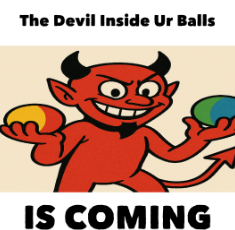

Overview
The Devil Inside Ur Balls is an ancient meme entity discovered during a late-night prop-building session on the ReimaginedCraft Minecraft server using the Axiom mod. What started as a joke about decorative orbs turned into a cult-classic myth with questionable anatomy and chaotic vibes.
It is rumored to be responsible for 99% of all mysterious lag spikes and for the sudden urge to build spheres in Minecraft, even when you know you can't make them look good. Some say it whispers block palette suggestions at 3AM, but only the truly sleep-deprived can hear them.
Favorite food: expired glow ink sacs and the last slice of digital pizza. Favorite hobby: hiding in the F3 debug screen and rearranging your hotbar when you’re not looking.
Origin
On May 24, 2025, two sleep-deprived Minecraft builders stared at a set of colorful spheres and one uttered the words that would echo through the halls of meme history: "The devil inside ur balls is coming." Legend says this devil feeds on the latency caused by item frames and thrives in prop spam.
According to ancient Discord logs, the phrase was immediately followed by 17 minutes of uncontrollable laughter and a failed attempt to build a statue shaped like a potato. The original message was deleted by a rogue bot, but screenshots survive to this day.
It is believed the Devil was first summoned by accidentally placing a redstone torch on a slime block while listening to eurobeat remixes.
Sightings
- 🟡 Appeared inside a glowing orb above the spawn fountain
- 🔴 Replaced a creeper statue's head for 0.2 seconds
- 🔵 Found hiding in a barrel labeled "Totally Not Cursed Items"
- 🟢 Briefly seen photobombing a group screenshot, but only in the reflection of a cauldron
- 🟣 Once disguised itself as a shulker box, causing three players to lose their inventory to "inventory gremlins"
- ⚫ Rumored to have DM'd a server admin with the message "nice balls" at 4:44 AM
Lore
According to modded server scrolls (i.e. random Notepad files), the Devil is a chaotic neutral force that only appears when builders argue over block palettes. It cannot be defeated—only appeased by sacrificing 3 slimeballs and a cracked stone brick renamed "Testicle Relic".
It is said that if you rename a snowball to "Forbidden Sphere" and throw it into the void, you might receive a cryptic sign at spawn reading "He watches from within".
Some believe the Devil is the true author of all Minecraft patch notes typos and that it once tried to unionize the server’s chickens. Its greatest weakness: being ignored during server meetings.
Prophecy foretells that one day, a player will accidentally summon the Devil by crafting a bed entirely out of magma blocks and then immediately logging off. Until then, beware the orbs.